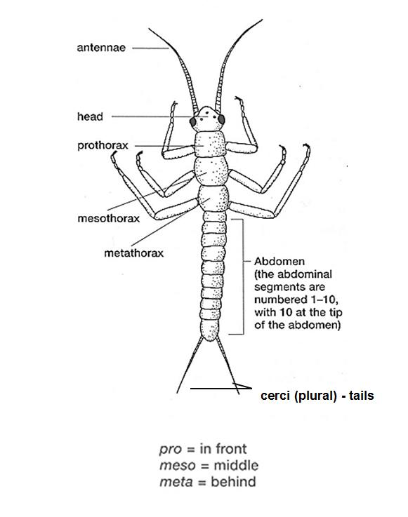
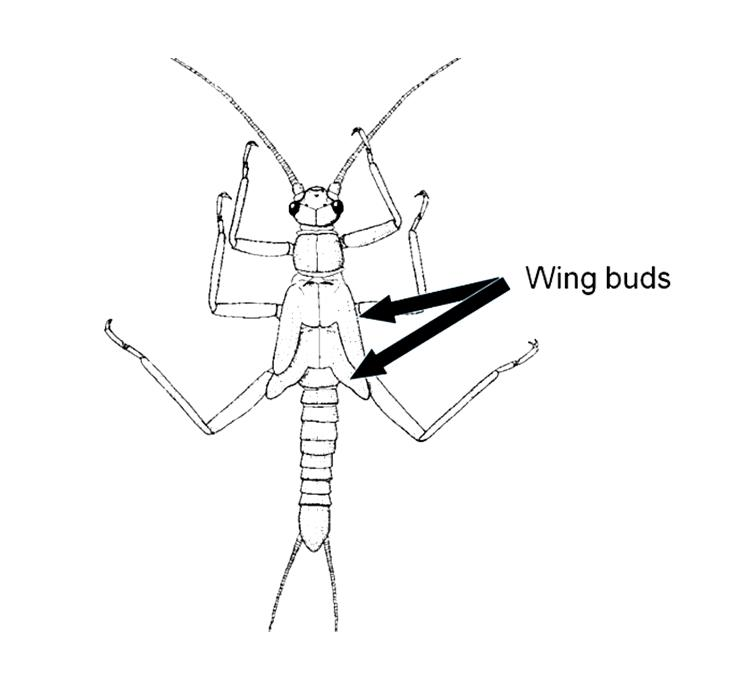
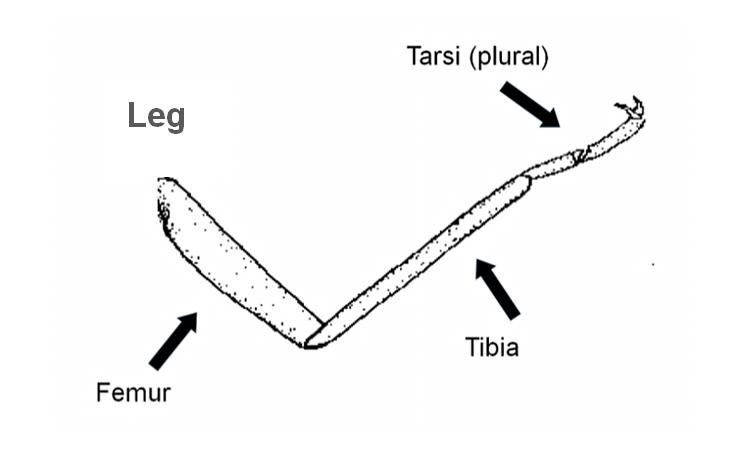
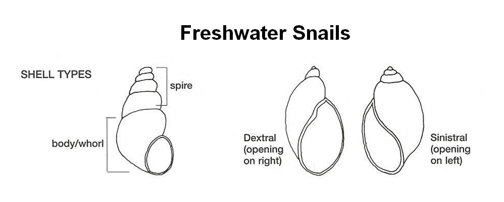

jump to BODY PARTS (what goes where)
jump to GLOSSARY (look up a word)
Use this option to log a sighting of mayfly nymphs. You can use the keys and speedbug to figure out what type of mayfly it is.
Use this option to do a quick assessment of your site. Waterbug IDs are completed to order level, which takes less time than completing a detailed survey. Order level differences are easy to see, they distinguish the mayflies (Order: Ephemeroptera), from the dragonflies (Order: Odonata) and the beetles (order: Coleoptera).
Use this survey to complete a detailed assessment of your site. You will need a hand lens to see some of the characters you are asked about in the keys. Some of the identifications made with this method are at species level, some are at order, it all depends on what you can reliably see of live critters with a magnifying glass.
jump to GLOSSARY (look up a word)




jump to BODY PARTS (what goes where)
abdomen - posterior part of the body, behind the thorax (as in the "body parts" section above)
antenna (plural: antennae) - paired, long appendages attached to the head (as in the "body parts" section above)
anterior - the front (as in the "body parts" section above)
apex - the tip or end of something
apical - at the tip of a limb (from apex)
appendage - a part of an animal, like a leg or an antennae, that is attached to its main trunk but clearly separate
aquatic - found in water
arthropods - invertebrates with an external skeleton from the phylum Arthropoda (for example insects and crustaceans)
atmospheric oxygen - oxygen that is part of gaseous air (the stuff we breath)
carapace - hard cover over thorax, or more of the body in crustaceans
carina - a ridge
carnivore - an animal that eats other animals
caudal filaments - tails, usually paired, (see cerci)
cephalothorax - a body segment equivalent to a fused head and thorax
cerci - the outer two tails, particularly on mayflies and stoneflies
chelae - pincer-like claws
chelate - bearing pincer-like claws
chitin - the stuff that insect's external skelatons are made from
cilia (plural: ciliae ) - microscopic hairs that occur in large quantities and are used to move small animals or their food
class - a taxonomic level
compound eye - an eye made from lots of smaller 'eyes'
coxa - the most proximal leg segment in some arthropods
crochet - a circlet or arc of small hooks
detritivore - an animal that eats detritus
detritus - decomposing animal and plant matter, such as old leaves
dextral - coiled (particularly snails) so that the opening of the shell is on the right when viewed ventrally
digitate - finger-like
dissolved oxygen - oxygen that is part of liquid water
distal - distant from the main body (for example the far end of an antenna, opposite to proximal)
dorsal - on or of the back or top (as in the "body parts" section above)
dorso-ventrally flattened - flattened so that the back (dors) and front (venter) are closer, opposite to flattened from the sides
elytron (plural: elytra ) - hardened front wings that cover and protect the hind wings
emerge - to leave the water (usually as an adult insect after living within the stream as a larva or nymph)
endemic - distribution restricted to a single geographic location
ephemeral - short lived
family - a taxonomic level
fauna - animals
femur (plural: femora ) - a leg segment
filter feeders - animals the filter water for food particles
flagellum (plural: flagellae ) - a whip like process
genus (plural: genera) - a taxonomic level
gill - a plate like or filamentous organ with a large surface area, it is used to extract oxygen from the water
gnathopods - the first two legs on amphipods, often with robust, chelate claws
grazers - animals that feed on dense patches of plant, such as grass, or periphyton
head capsule - a hardened capsule that covers the head
herbivore - an animal that feeds on plants
hydrophobic - water repellent
instar - stages of growth in animals that shed their external skeletons, each time the animal sheds it starts a new instar
invertebrate - an animal without a backbone or the small bones (vertebrae) from which it is built
kingdom - a taxonomic level
labial palp - paired, hinged plates that form part of the dragonfly mouthparts
labium - the mouthparts equivalent to a lower lip
labrum - the mouthparts equivalent to an upper lip
larva (plural: larvae ) - a juvenile insect
lateral - on or of the sides (as in the "body parts" section above)
laterally flattened - flattened from the sides
macroinvertebrate - an invertebrate which is large enough to see without a microscope
mandible - one of the more hardened mouthparts, often used for biting, or chewing
maxillary palps - one of the sets of mouthparts (paired) in many arthropods
mentum - roughly equivalent to a chin, also a tooth plate in chironomids
meso- - middle (as in the "body parts" section above)
meta- - last (as in the "body parts" section above)
moult - to lose the outer layer of skin (verb), or the outer layer of skin that is lost (noun)
notum (plural: nota ) - dorsal part of a thoracic segment
nymph - a juvenile insect that closely resembles the adult, but has poorly developed wings
ocelli - simple eyes like those on larvae
omnivore - an animal that eats both plant and animal matter
operculum - a small round door used by gastropods to close their shells
order - a taxonomic level
palp - a small finger-like appendage, fleshy in molluscs and jointed in arthropods
phylum - a taxonomic level
pigmented - darkened or coloured
plastron - a breathing organ used by some aquatic insects
post- - after
posterior - the hind end (as in the "body parts" section above)
predators - animals that hunt, kill and eat other animals
prementum - especially in odonates, one of the mouthparts
pre- - before
pro- - first (as in the "body parts" section above)
proboscis - the beak-like mouthparts of a true bug
processes - bits that stick out but aren't considered as separate limbs
pro-legs - simple, fleshy legs without proper joints
pubescent - hairy
pupa - the phase between larva and adult, usually in a protective case
raptorial - designed for grasping, usually with large claws
riffle - a fast moving, shallow section of river where the water surface is disturbed by the river bed
rostrum - see proboscis
sclerite - a hardened plate of external skeleton
sclerotised - hardened, leathery, often dark orange, brown or black
scraper - an animal that scrapes food from hard surfaces
scutellum - a small triangular plate bordered by the wings and the pronotum in beetles and bugs
seta (plural: setae ) - stiff hairs
shredder - an animal that gets its food by pulling apart organic matter such as leaves
sinistral - coiled (particularly snails) so that the opening of the shell is on the left when viewed ventrally
siphon - a hollow tube used by some true bugs to puncture the water surface while breathing
sp. - species (singular), usually indicates that the animal is unknown beyond genus level
species - a taxonomic level
spiracle - a hole that connects the insides of an insect to a supply of air
spp. - species (plural) indicates many species within a genus
sternum - ventral part of a body segment
swimming hairs - a fringe of hairs, (usually along a leg ) that allow it to work like a paddle
tarsus (plural: tarsi ) - the final segments of a leg after the tibia
taxonomy - the system for classifying/identifying organisms
telson - the central piece of a crustacean tail fan, shield shaped
terminal filament - the central tail (of three in mayflies)
terrestrial - found on land
thoracic - of the thorax
thorax - the body segments immediately after the head (as in the "body parts" section above)
tibia - a leg segment
trochanter - one of the leg segments closest to the body
tubercles - rounded lumps
ventral - on or of the underside (as in the "body parts" section above)
wing pads/buds - the covers on a nymphs back that house its developing wings